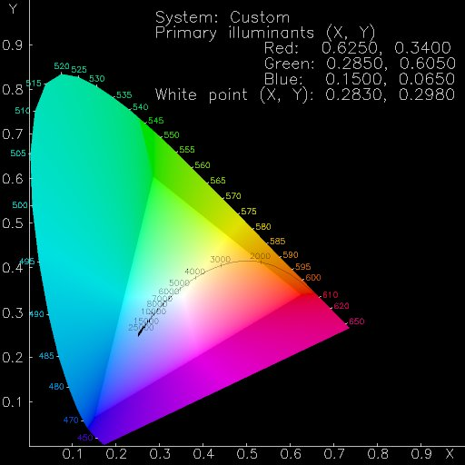

A quick spot of colour theory before we can move on. The bare minimum, really! (1)
The colour of an object depends not only on the precise spectrum of light emitted or reflected from it but also on the observer - their species, what else they can see, even what they have recently looked at! Colour is not an objective property of real-world objects; it is a subjective, biological sensation.
Given the preceeding description of colour sensation, one might be forgiven for assuming that there is no way to cope with these vagarities. However, by treating the entire human eye/brain system as a black box and performing colour matching experiments upon it, it has been possible to arrive at a surprisingly objective, measurable and repeatable model of colour that corresponds in large measure with how we see colour. This system, invented and standardised in the 1930s by the International Commission on Lighting (Commission Internationale de l'clairage, or CIE) [14] is called CIE XYZ [15] and is capable of representing all colours that can be seen by the human visual system. The XYZ value of a colour can be measured by physical instruments or calculated from the spectrum of light given off by an object.
When we look at an image on a computer screen, what we see depends on the precise colour and intensity of light emitted by each of the three phosphors in a computer monitor; this in turn depends on the make and the model, plus less tangible factors (such as the age, blue phosphors degrade faster than the other two). In the limit, each monitor is unique. This means that the same R,G,B values applied to two different monitors will give different colours; similarly, to produce exactly the same colour on two different monitors, different R,G,B values must be applied.
Provided the CIE XYZ measured colours of the red, green and blue phosphors are available for a particular monitor, any RGB colour on that monitor can be converted to CIE XYZ. Similarly, any measured CIE XYZ colour can be reproduced on that monitor, provided it falls within the range of displayable colours - the gamut - bounded by the monitor primaries.
Figure 6 shows the triangular gamut of one particular monitor, drawn on a chromaticity diagram. This is a way of reducing the three dimensional CIE XYZ space to two dimensions by removing the brightness information (light orange and dark orange map the the same chromaticities). Different monitors will have different gamuts.

Figure 6: The colour gamut of a sample monitor (an HP A1097C).
CIE XYZ is the fundamental system for colour measurement, but (like RGB space) it is not perceptually uniform. That is, the geometric distance apart of two colours does not relate to how different those colours appear. However, in 1976 the CIE came up with a transformation of CIE XYZ space that is (fairly) uniform. This is CIE LUV space, which will be used in the next section.
The L parameter stands for lightness. A grey scale with even numerical steps along the L axis will look even, and a mid grey will be at exactly the middle of the L axis. It is easier to think of the other two axes in terms of polar coordinates. The further a colour is from the central L axis, the more saturated it is. The angle round from the positive U axis relates to hue.
And, in summary, if we plot a series of colours in CIE LUV colour space, we can tell how evenly spaced those colours are from each other. Which we are about to do.
{kind=link}